Pokémon Data Study: What 1,025 Pokémon Reveal About Type Matchups, Stats, and Rarity

A three-part Pokémon analysis covering type matchups, base-stat patterns, and rarity signals across Generations 1 to 9 using Python, pandas, numpy, and matplotlib.
This page now follows the latest working markdown draft more closely, including the updated Standard Pokemon versus Special Pokemon chart split and the fuller written interpretation behind each section.
You can inspect the cleaned dataset used behind the visuals and notes on this page.
Dataset: "complete_1025_pokemon_dataset.csv"Introduction
Pokémon has been part of my life since childhood. I first discovered it through Pokémon Emerald, and from there I got hooked. I played the mainline Gen 3 games like Emerald, Sapphire, FireRed, and LeafGreen, then moved into the Nintendo DS era with Black, White, Black 2, White 2, HeartGold, and SoulSilver. Years later, I continued with the Switch titles like Sword/Shield, Scarlet/Violet, and Legends: Arceus.
Now that Pokémon continues to stay popular with newer titles like Pokémon Legends: Z-A, I wanted to look at the franchise in a different way: not only as a player, but as a data analyst.
For this study, I used a cleaned Pokémon dataset based on public data from Kaggle. The dataset covers 1,025 Pokédex IDs from Generation 1 to Generation 9, with 1,207 total rows after including alternate forms, Mega Evolutions, Primal forms, Paradox forms, and other special variants.
The final dataset includes the familiar battle stats like HP, Attack, Defense, Special Attack, Special Defense, and Speed, but it also includes extra fields such as type matchups, experience growth, height, weight, base egg steps, base happiness, capture rate, official class, and special group.
Questions that guided the study: Which types are most common, which typings are strongest offensively and defensively, which Pokémon rise to the top among Standard Pokemon and Special Pokemon, whether defensive Pokémon are really slower, and whether Legendary and Mythical Pokémon are actually harder to catch and slower to train.
This study answers those questions using Python, pandas, numpy, and matplotlib inside VS Code.
Section 1: Type Matchups
The first part of the study focuses on Pokémon types. At first glance, type matchups look like a simple rock-paper-scissors system. Fire beats Grass, Water beats Fire, Electric beats Water, and so on. But Pokémon becomes more interesting because many Pokémon have two types. A dual-type Pokémon can gain more resistances, more weaknesses, or sometimes both.
To study this, I generated an 18x18 type matchup matrix and populated it with defensive damage multipliers.
Q1From Generation 1 to 9, which single typing is the most and least common?
The most common single type is Water, with 81 single-type Water Pokémon. The least common single type is Flying, with only 4 single-type Flying Pokémon.
This makes sense from a game-design point of view. Water Pokémon appear across oceans, rivers, lakes, fishing encounters, surfing routes, and many regional Pokédex areas. Flying, on the other hand, is often paired with Normal, so pure Flying Pokémon remain rare.
Q2From Generation 1 to 9, which double typing is the most and least common?
The most common dual typing is Normal/Flying, with 31 Pokémon. Several dual-type combinations appear only once in the dataset.
Fairy/IceElectric/PsychicDragon/FairyBug/GhostSteel/WaterNormal/WaterGhost/IceElectric/FireFire/Steel
Normal/Flying being the most common is not surprising. Early-route birds have been a repeated design pattern since Gen 1, and many of them share that typing.
Q3Which single typing has the best offensive capability?
Fighting and Ground are tied as the best offensive single types. Each one hits 5 types for super-effective damage.
Fighting is strong against Normal, Ice, Rock, Dark, and Steel. Ground is strong against Fire, Electric, Poison, Rock, and Steel. Both are strong offensive types, but they win in different matchups.
Q4Which single typing has the best defensive capability?
Steel is the best defensive single type, with a defensive score of 10. It has 11 resistances and only 3 weaknesses, making it one of the strongest defensive types in the game.
This explains why Steel Pokémon often feel hard to break. Even when their stats are not always the highest, their type profile gives them many safe matchups.
Q5Which single typing has the worst offensive capability?
Normal is the worst offensive single type. Normal has 0 super-effective matchups. It does not hit any type for extra damage, and it cannot affect Ghost-type Pokémon at all.
This does not mean Normal Pokémon are useless. Many Normal Pokémon have strong stats or good move pools. But as an attacking type alone, Normal has the weakest offensive coverage.
Q6Which single typing has the worst defensive capability?
Ice is the worst defensive single type, with a defensive score of -3. Ice has only 1 resistance and 4 weaknesses: Fire, Fighting, Rock, and Steel.
This confirms something many players already feel in battle: Ice is dangerous offensively, but fragile defensively.
Q7Which double typing has the best offensive capability?
Several dual-type combinations are tied for the best offensive coverage, each with 7 super-effective matchups.
Grass/DarkGrass/IceGrass/PsychicRock/FightingRock/Psychic
This shows that dual typing can greatly expand offensive reach. Some combinations cover many more matchups than either type could handle alone.
Q8Which double typing has the worst offensive capability?
Several dual-type combinations have only 1 super-effective matchup.
Bug/SteelDark/GhostDark/PoisonElectric/WaterNormal/GhostWater/Ground
This is interesting because some of these typings are still good defensively. A typing can be poor offensively but strong as a defensive profile.
Q9Which double typing has the best defensive capability?
Fairy/Steel and Steel/Ghost are tied as the strongest defensive combinations, each with a defensive score of 11.
These combinations resist many attacker types and have very few bad matchups. This is why Pokémon with these typings often feel difficult to remove from battle.
Q10Which double typing has the worst defensive capability?
Grass/Dragon and Ice/Psychic are tied for the weakest defensive score at -4.
Both combinations suffer from several weaknesses and limited resistance value. This makes them harder to use defensively, especially against teams with wide type coverage.
Section 2: Base Stats
After type matchups, the next part of the study focuses on base stats. Every Pokémon has six main stats: HP, Attack, Defense, Special Attack, Special Defense, and Speed. These numbers shape how a Pokémon performs in battle, from raw physical damage to bulk and turn order.
For the ranking questions in this section, I split the dataset into two reader-friendly groups. Standard Pokemon refers to the main regular roster, while Special Pokemon refers to alternate forms and rare high-tier entries such as Mega Evolutions, Primal forms, Ultra Beasts, Paradox forms, Mythicals, Legendaries, and other non-standard variants.
Why the split matters: if everything is ranked together, special forms and rare high-tier entries immediately dominate the charts. Splitting them creates a cleaner comparison: Standard Pokemon show the regular roster on its own terms, while Special Pokemon isolate the extreme side of the dataset.
The Standard Pokemon group contains 990 rows, while the Special Pokemon group contains 217 rows in the current cleaned dataset.
Q11AWhich Standard Pokemon have the highest total base stats?
Among Standard Pokemon, Slaking ranks first with 670 total base stats. The next few names are Palafin Hero Form (650), Greninja Ash-Greninja (640), and Wishiwashi School Form (620).
This is a much more interesting result than the old mixed ranking because it highlights powerful non-legendary roster entries without letting Mega or legendary forms immediately take over the chart.
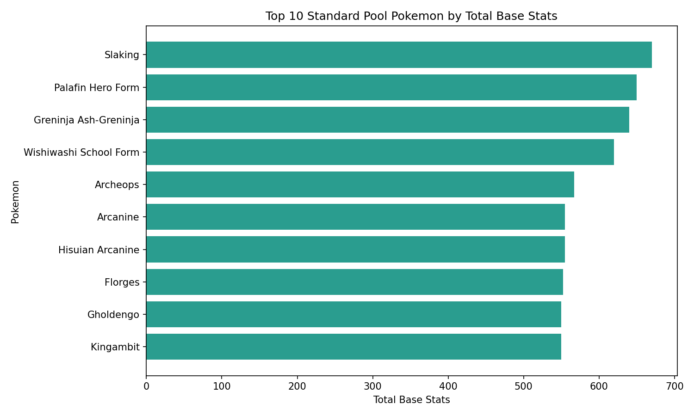
Q11BWhich Special Pokemon have the highest total base stats?
Among Special Pokemon, Eternatus Eternamax ranks first by a huge margin with 1,125 total base stats. Behind it are Mega Mewtwo X, Mega Mewtwo Y, and Mega Rayquaza, all tied at 780, followed by Primal Groudon and Primal Kyogre at 770.
Once the full non-standard bucket is included, the chart becomes a true ranking of extreme forms rather than a tiny Mega-only snapshot.
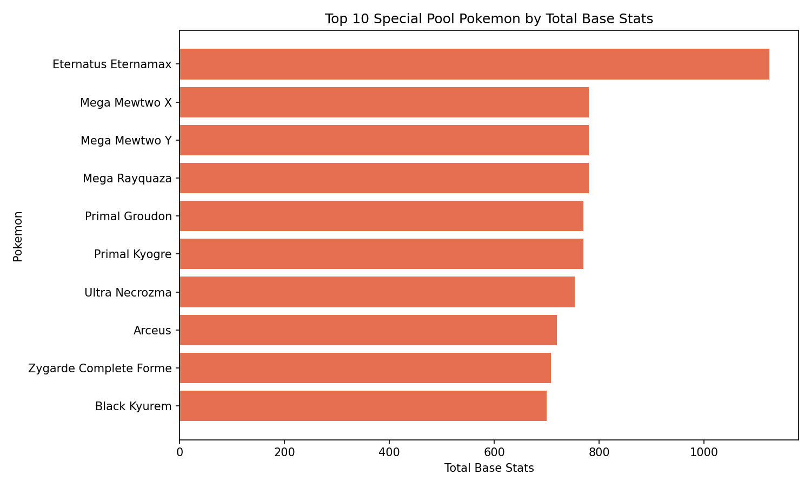
Q12AWhich Standard Pokemon have the highest Attack?
Among Standard Pokemon, Rampardos has the highest Attack at 165. The next tier includes Galarian Zen Mode, Palafin Hero Form, and Slaking, all at 160.
That is a good reminder that extreme physical power is not limited to legendary or mythical Pokémon. Some Standard Pokemon still hit incredibly hard on paper.
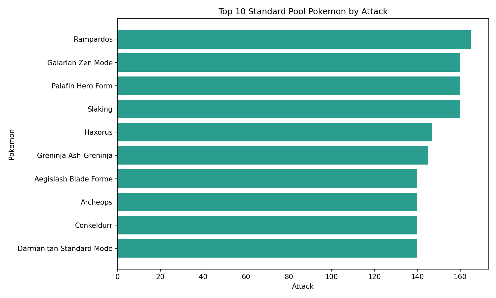
Q12BWhich Special Pokemon have the highest Attack?
Among Special Pokemon, Mega Mewtwo X leads with 190 Attack. After that come Mega Heracross (185), Kartana (181), Deoxys Attack Forme (180), Mega Rayquaza (180), and Primal Groudon (180).
This version of the chart is much richer because it includes Mega forms, Ultra Beasts, Mythicals, and legendary battle forms together.
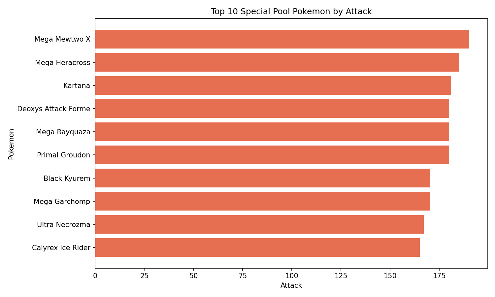
Q13AWhich Standard Pokemon have the highest Defense?
Among Standard Pokemon, Shuckle ranks first with a huge 230 Defense. It is followed by other famous walls such as Steelix (200), Avalugg (184), Hisuian Avalugg (184), and Aggron (180).
The Standard Pokemon group makes the defensive specialists stand out much more clearly than the old mixed ranking did.
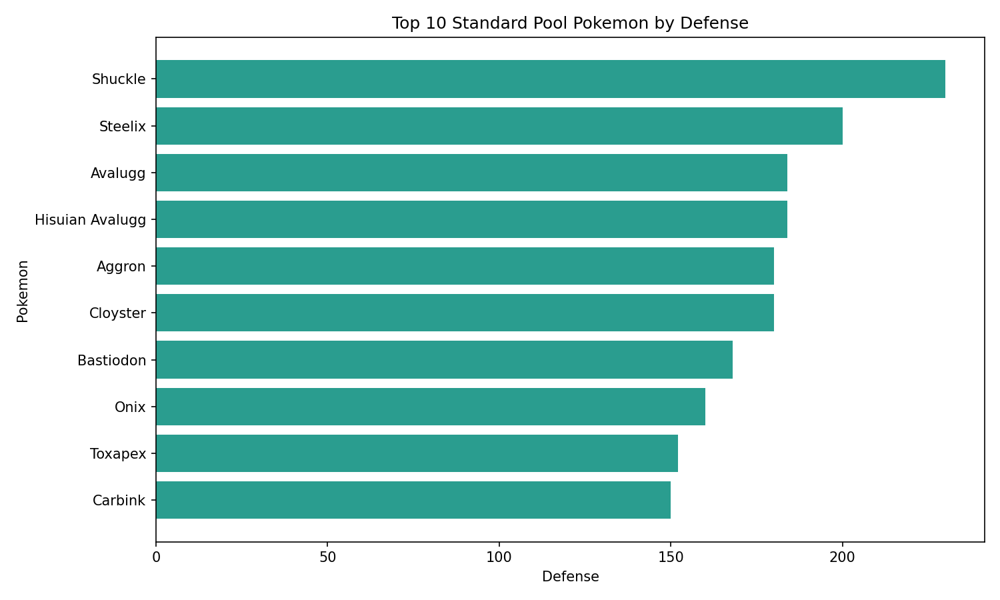
Q13BWhich Special Pokemon have the highest Defense?
Among Special Pokemon, Eternatus Eternamax dominates Defense with 250. It is followed by Mega Aggron (230), Mega Steelix (230), and Stakataka (211).
Compared with Standard Pokemon, this group includes more extreme outliers designed around very high stat ceilings.
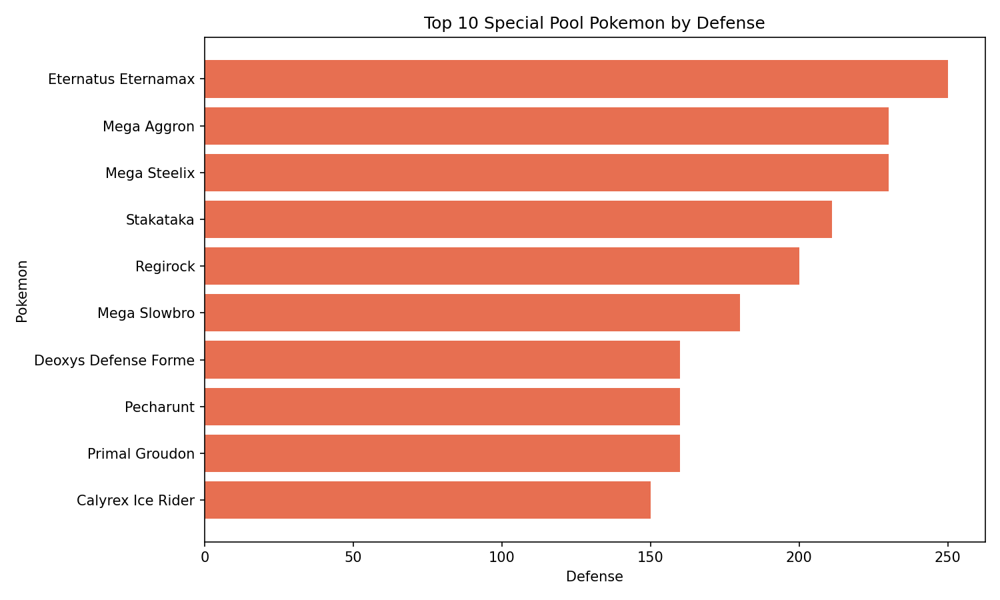
Q14AWhich Standard Pokemon have the highest Special Attack?
Among Standard Pokemon, Greninja Ash-Greninja ranks first with 153 Special Attack. It is followed by Chandelure, Cursola, and Vikavolt, each at 145.
This ranking is more useful than the old version because it highlights elite special attackers that still belong to the regular battle roster.
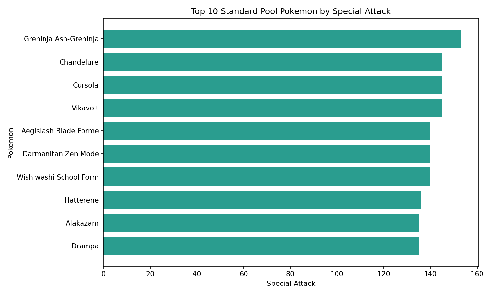
Q14BWhich Special Pokemon have the highest Special Attack?
Among Special Pokemon, Mega Mewtwo Y ranks first with 194 Special Attack. The next strongest entries are Deoxys Attack Forme (180), Mega Rayquaza (180), Primal Kyogre (180), Mega Alakazam (175), and Xurkitree (173).
This is a more convincing Special Pokemon chart because it now reflects several different kinds of non-standard power spikes.
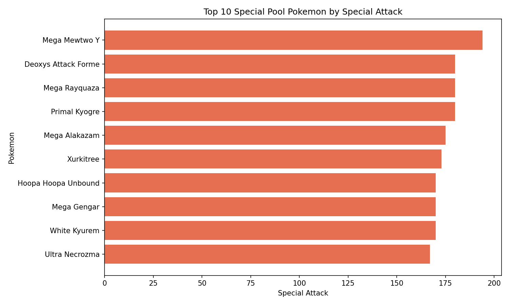
Q15AWhich Standard Pokemon have the highest Special Defense?
Among Standard Pokemon, Shuckle also leads Special Defense with 230. Behind it are Florges (154), Carbink (150), Probopass (150), and Toxapex (142).
This list mixes pure walls with bulky support-oriented species, which gives a better picture of natural special bulk in the main roster.
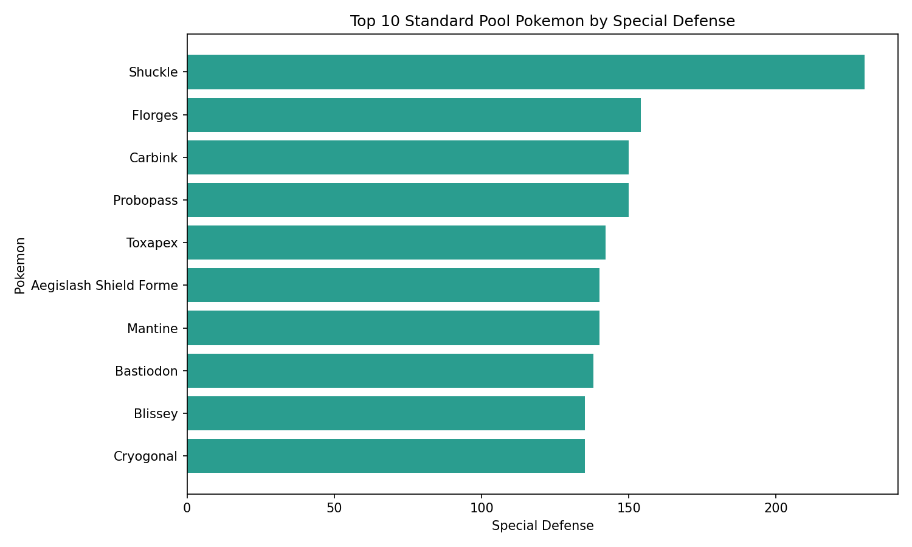
Q15BWhich Special Pokemon have the highest Special Defense?
Among Special Pokemon, Eternatus Eternamax ranks first again with 250 Special Defense. After that come Regice (200), Deoxys Defense Forme (160), Primal Kyogre (160), Ho-oh (154), and Lugia (154).
The Special Pokemon group is no longer just about offense. It also contains some of the most exaggerated defensive stat profiles in the full dataset.
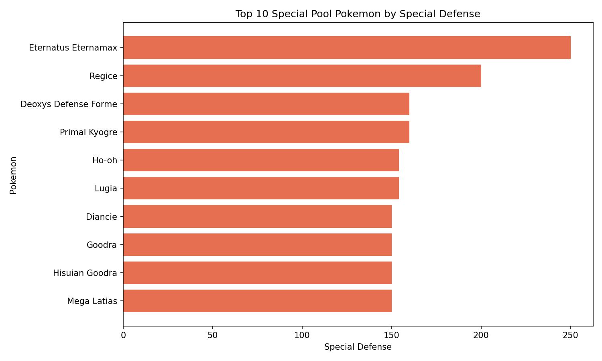
Q16AWhich Standard Pokemon are the fastest?
Among Standard Pokemon, Ninjask is the fastest with a Speed stat of 160. It is followed by Electrode and Hisuian Electrode at 150, then Accelgor (145).
This is a clean example of how speed monsters still exist outside the legendary and special-form tier.
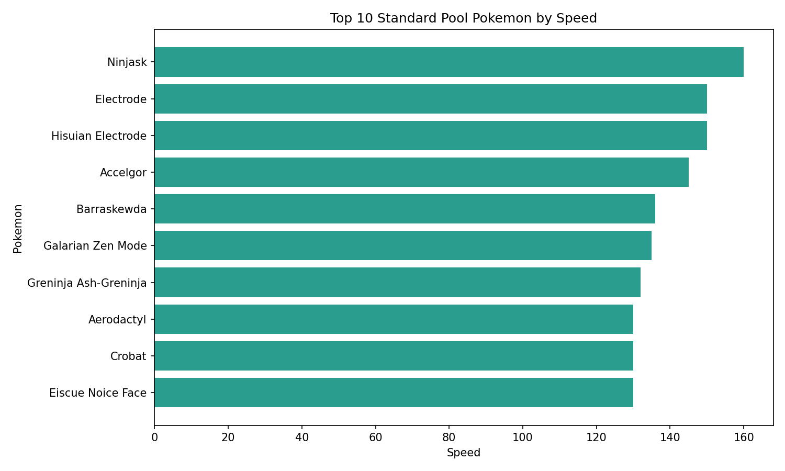
Q16BWhich Special Pokemon are the fastest?
Among Special Pokemon, Regieleki is the fastest by far with 200 Speed. It is followed by Deoxys Speed Forme (180), Pheromosa (151), Calyrex Shadow Rider (150), and several Deoxys and Mega entries close behind.
This chart does a much better job of showing how many speed extremes live in the Special Pokemon group.
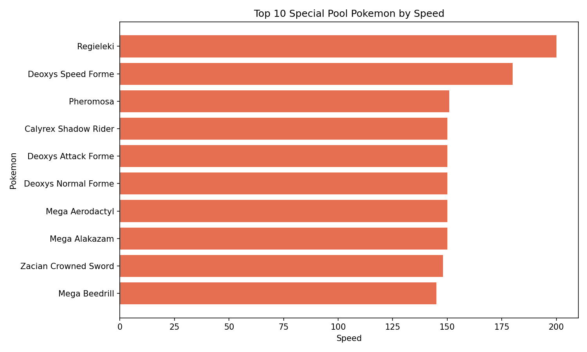
Q17Are Pokémon with higher Defense usually slower?
For the correlation questions, I kept the full 1,207-row dataset. The goal here is to test broad stat relationships across the whole project, not only the two leaderboard buckets.
The data does not support the idea that Pokémon with higher Defense are usually slower. The Pearson correlation between Defense and Speed is -0.0271, while the Spearman correlation is 0.0300. Both values are extremely close to zero.
This means there is no clear relationship between Defense and Speed in this dataset. Some defensive Pokémon are slow, but high Defense alone does not strongly predict low Speed.

Q18Are Pokémon with higher Attack usually slower?
The data also does not support the idea that high-Attack Pokémon are usually slower. The Pearson correlation is 0.3337, and the Spearman correlation is 0.3283.
This is a weak positive relationship, not a negative one. In this dataset, higher Attack tends to come with slightly higher Speed on average. The relationship is not strong, but it goes against the idea that physical attackers are usually slow.

Q19Are Pokémon with higher Special Attack usually slower?
The same pattern appears with Special Attack. The Pearson correlation is 0.3786, and the Spearman correlation is 0.3631. This is also a weak positive relationship.
In other words, Pokémon with stronger Special Attack tend to be slightly faster on average, not slower. Again, the relationship is weak, but the trend does not support the idea that stronger special attackers are usually slow.

Section 3: Capture Rate, Experience Growth, and Official Class
Not every Pokémon is designed to feel the same. Some are common encounters. Some are rare. Some are meant to be late-game challenges. Legendary and Mythical Pokémon often feel harder to catch and slower to train, but I wanted to test whether the dataset supports that idea.
For this section, I compared three fields: capture_rate, experience_growth, and official_class.
Q20Do Legendary and Mythical Pokémon generally have lower capture rates?
Yes. Legendary and Mythical Pokémon generally have much lower capture rates.
- Normal Pokémon:
99.67 - Legendary Pokémon:
16.65 - Mythical Pokémon:
9.50
This shows a clear pattern. Official class is strongly connected to capture difficulty. Legendary and Mythical Pokémon are much harder to catch on average than normal Pokémon.


Q21Do Legendary and Mythical Pokémon generally require more experience to reach Level 100?
Yes. Legendary and Mythical Pokémon generally require more experience to reach Level 100.
- Normal Pokémon:
1,046,900.35 - Legendary Pokémon:
1,250,000.00 - Mythical Pokémon:
1,224,648.00
Legendary Pokémon usually follow the slowest growth curve, while Mythical Pokémon are also much closer to that higher requirement than normal Pokémon.


Q22Is capture rate strongly related to experience growth?
Capture rate and experience growth are related, but not strongly enough to explain the full pattern by themselves. The Pearson correlation is -0.2512, and the Spearman correlation is -0.4004.
This means the relationship is weak to moderate and negative. Pokémon that need more experience growth tend to have lower capture rates, but the connection is not strong enough on its own. Something else explains the pattern better.

Final Thoughts
This Pokémon dataset started as a fun project, but it quickly became a strong data study.
The type-matchup section confirmed several long-time player instincts. Water is extremely common. Steel is one of the best defensive types. Ice is dangerous offensively but weak defensively. Dual typing can either create powerful coverage or expose major weaknesses.
The stat section became much clearer after splitting the rankings into two groups. Standard Pokemon show which regular-roster Pokémon stand out on their own terms, while Special Pokemon isolate rare high-tier forms instead of letting them distort every chart. That split makes the results easier to interpret and much fairer to compare.
The capture and experience section showed a cleaner pattern. Legendary and Mythical Pokémon are harder to catch and usually require more experience to reach Level 100. The category of the Pokémon explains this better than raw correlation alone.
As a player, these results make the games feel even more intentional. As an analyst, it shows how much structure exists behind a game that many of us first loved as kids.
Pokémon may look simple on the surface, but the numbers behind it tell a deeper story: every type, stat, class, and form is part of a larger design system.
Afterword and Source Credits
This project was made possible through public Pokémon datasets and community-maintained references. I used these sources as the foundation for building, cleaning, validating, and expanding the analysis dataset.
- Pokémon Dataset by Rounak Banik on Kaggle
- All Pokémon Dataset by maca11 on Kaggle
- Pokémon Type Chart Gist by armgilles
- Pokémon Database
The full project files, cleaned dataset work, generated charts, and analysis scripts can be found in my GitHub portfolio repository.